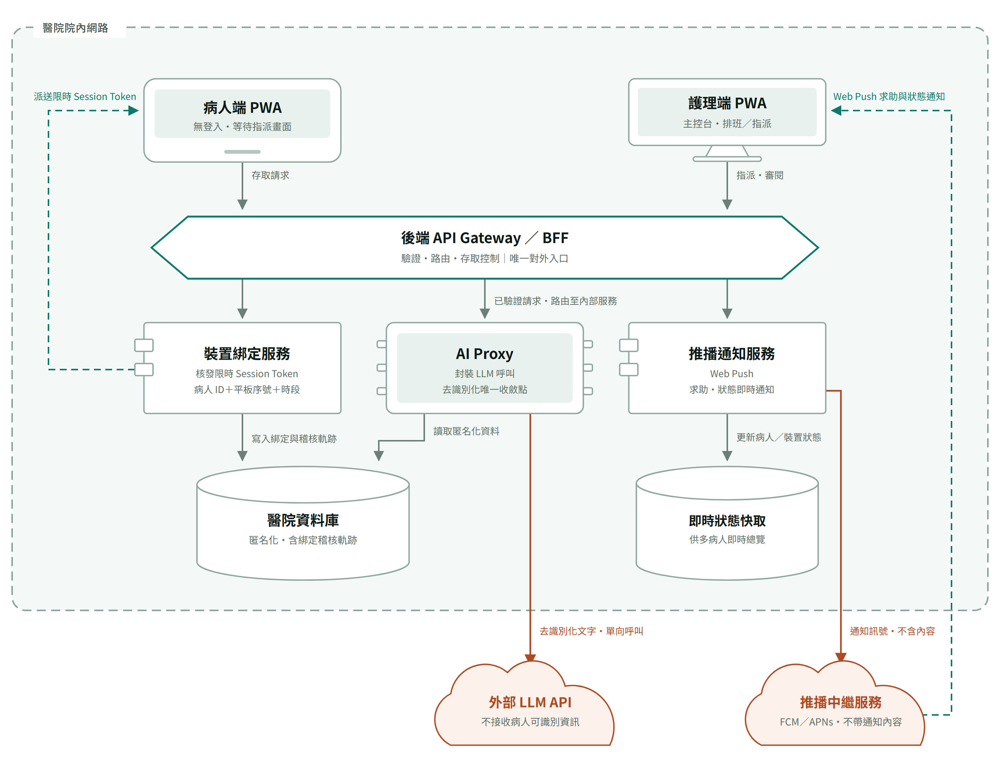
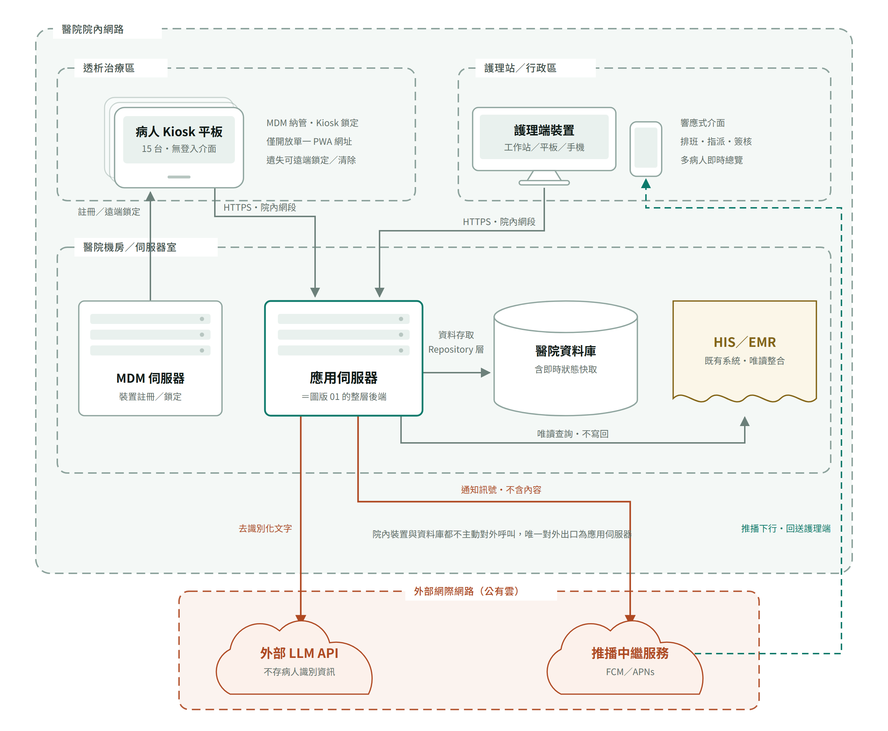

架構圖¶
兩張圖出自需求階段，是系統實體與邏輯架構的視覺依據，與 實作規格書 搭配閱讀。 圖一畫軟體元件之間怎麼互相呼叫，圖二畫這些東西實際擺在哪裡、哪幾條線跨出醫院； 圖一的整層後端服務，就是圖二機房裡那一台應用伺服器。
兩張圖的「醫院院內網路」是同一個框：病人端平板與護理端裝置都在框內。 圖一過去把兩個 PWA 畫在框外、框名又寫「醫院內部網路邊界」，等於宣稱平板不在院內網段， 與圖二和 SRS §9（15 台平板由 MDM 納管於透析治療區）牴觸，已於 2026-09-09 重繪對齊。
全端架構（含裝置綁定流程）¶

護理師指派平板 → 系統核發 Session Token（綁定「病人＋平板＋本次療程」）→ 病人端在 Token 有效期內存取資料。 細節見 SRS 4.3／4.4 與技術進度報告 §5.2。
讀圖四個重點
- 虛線框是網段，不是部署單元。兩個 PWA 都在框內，因為它們跑在院內的平板與工作站上；框住的是「哪些東西在院內網路」，不是「哪些東西跑在伺服器上」。
- 兩個前端的箭頭都只指向 API Gateway，沒有任何一條線直達資料庫——這是資料庫使用規範 第 2 條的圖像化。
- 綠色虛線是反方向的：平板拿到 Session Token 不是因為它去要，而是護理師指派後由後端派送；平板全程是被動端。
- 鏽色線有兩條，起點都在院內後端：AI Proxy 送去識別化文字給外部 LLM，推播通知服務送不含內容的訊號給推播中繼。護理端那條綠色虛線繞經推播中繼服務，是全圖唯一由院外回送院內的線。
系統實體架構與網路分區¶

資料流一律為 前端 → 後端 API → PostgreSQL；前端不含任何資料庫 SDK， 存取全數收斂在後端 Repository 層。約束見 資料庫使用規範。
讀圖三個重點
- 虛線框是網段，不是資料夾；沒畫出來的線和畫出來的一樣重要——平板、護理端裝置、資料庫都沒有任何一條主動打出去的線。
- 主動跨出院內網路的只有兩條，起點都是應用伺服器：一條送去識別化文字給 LLM，一條送不含內容的通知訊號給推播中繼。由院外回進來的只有一條，是推播中繼服務把通知回送給護理端裝置。
- HIS／EMR 用另一種顏色與形狀，因為它不是本專案的系統，只能讀、不寫回。
- 測試期落差：Supabase 主機在院外，測試環境拓樸與此圖不同，所以測試資料一律使用合成假資料。
- 實作落差：這兩張圖畫的是需求階段設計的 Web Push（經 FCM／APNs）。目前實作改用護理端 SSE 長連線＋病人端 3 秒輪詢，兩者都收斂在應用伺服器內、不經公有雲中繼，見技術進度報告。要照圖走 Web Push，需先與資訊室確認防火牆是否放行 FCM／APNs。
圖例¶
| 形狀 | 代表 |
|---|---|
| 平板外框 | 病人端裝置（Kiosk 平板） |
| 螢幕＋腳架 | 護理端裝置（工作站／平板／手機） |
| 六邊形 | API Gateway／BFF，唯一對外入口 |
| 左側雙耳矩形 | 後端服務元件（裝置綁定、推播通知） |
| 晶片 | AI 服務（AI Proxy） |
| 圓柱 | 資料庫與快取 |
| 機櫃 | 實體伺服器 |
| 雲 | 院外服務 |
| 波浪底文件 | 既有系統，唯讀整合 |
| 線條 | 代表 |
|---|---|
| 實線箭頭 | 請求／資料寫入，由前端或上游發起 |
| 綠色虛線 | 伺服器主動派送，前端不發問 |
| 鏽色實線 | 跨出醫院邊界，單向且已去識別化 |
| 框線 | 代表 |
|---|---|
| 灰綠虛線框 | 網段。最外層是醫院院內網路，內層是治療區、護理站、機房 |
| 鏽色虛線框 | 外部網際網路（公有雲），框內都是院外服務 |
三句必背¶
- 資料流方向恆定：前端 → 後端 API → PostgreSQL，前端不得引入任何資料庫 SDK。
- 身分不靠登入靠綁定：Session Token ＝ 病人＋平板＋時段，限時限裝置，由自建服務核發與失效。
- 對外呼叫只有兩條，起點都在院內後端：AI Proxy 呼叫外部 LLM、推播通知服務呼叫推播中繼。院內裝置與資料庫一條都沒有，且任何一條都不得攜帶病人可識別資訊。
互動版（可縮放、深淺主題自動切換）：https://claude.ai/code/artifact/d1a1b6ff-2964-464b-ac80-097eeaaa7995
兩張圖的原始碼在 architecture-diagrams.src.html（只存在於 repo）。
改圖請改這份，再用它重新產生 images/ 底下的 PNG 與互動版，不要單獨修圖片。
版本歷程¶
| 定版 | 日期 | 異動 |
|---|---|---|
| 0909 | 2026-09-09 | 首次定版 |